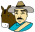
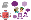
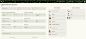
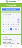
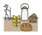

Arquitectura del Sistema
Cinco niveles de interacción entre productores, clientes, transportadores, administradores de cooperativa e investigadores.
Roles principales (clic para saber mas)
- Productor: planifica, produce y certifica.
- Cliente: establece contratos anticipados.
- Transportador: coordina la logística territorial.
- Administrador de cooperativa: gestiona la gobernanza y los pagos.
- Investigador: genera indicadores y conocimiento.
Apps & Acceso
Para iPhone: abre este enlace en Safari → Compartir → “Agregar a pantalla de inicio”.

Rol 1: Productor
Eres campesino o empresario en agroindustria rural. Podrás:
Rol 2: Cliente
Détails sur la manière dont les clients peuvent établir des contrats d'achat anticipés, garantissant la production future.
Rol 3: Transportador
Détails sur le rôle de coordination logistique, l'optimisation des itinéraires territoriaux et le suivi des commandes.
Rol 4: Administrador de cooperativa
Détails sur la gestion de la gouvernance coopérative, la transparence des transactions et le traitement des paiements.
Rol 5: Investigador
Détails sur la génération d'indicateurs de durabilité, le partage de connaissances et l'aide à la prise de décision pour la coopérative.
Organizar tu trabajo
Objetivo: Reducir sus costos de producción y su tiempo laboral en la producción de alimentos ecológicos.
¿Cómo se hace?
-

La maneras más efectivas de producir se identifican entre los científicos y los agricultores en cooperativas. Se crean a partir de los talleres **“itinerarios técnicos”**: una serie de actividades y observaciones.
-

Los itinerarios aparecen en una **agenda interactiva** en su móvil.
-

Puede así organizar su trabajo, producir sus propios insumos, actuar en caso de eventos y planificar su oferta.
Planificar tu oferta para contratos anticipados
Objetivo: Asegurar la venta de su producción antes de cosechar, garantizando precios justos y estables.
-

Utilice la aplicación para pre-vender sus productos a clientes, restaurantes o comedores institucionales. Esto minimiza el riesgo de excedentes.
-

El precio justo se establece en base a los costos reales de producción ecológica y los acuerdos dentro de la cooperativa, evitando intermediarios.
Certificarse y participar en la investigación
Objetivo: Validar la calidad ecológica de la producción y contribuir al desarrollo de conocimiento de la comunidad.
-
Participe en la investigación con académicos. Sus observaciones de campo son datos clave para generar indicadores de bienestar social y ambiental.
-
La **Certificación Participativa (SPG)** se basa en la confianza mutua y la transparencia de las prácticas, apoyada por la App.